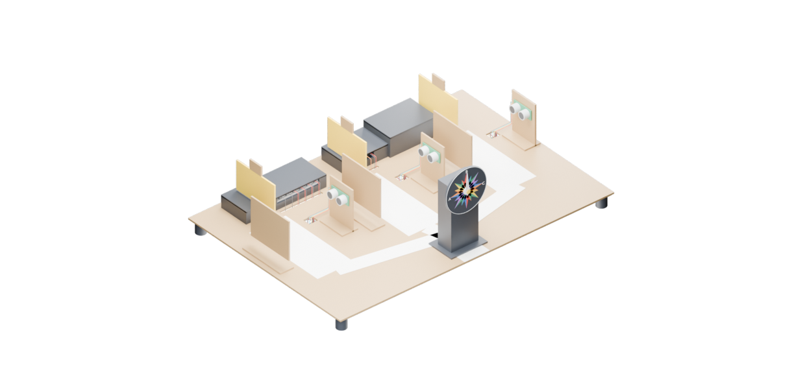
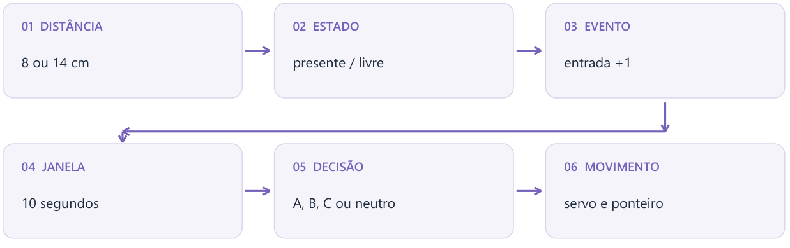
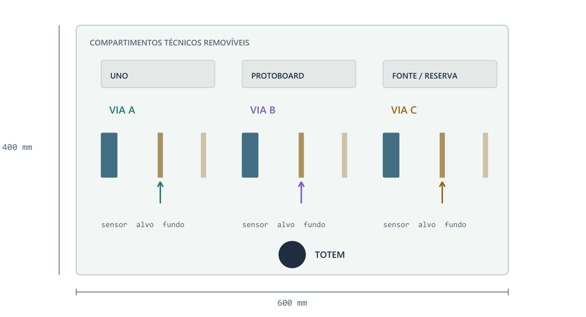
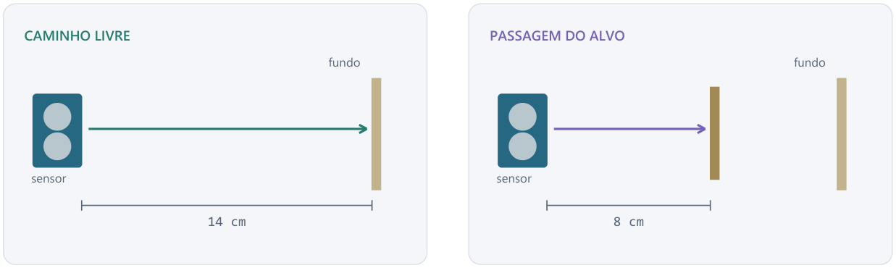
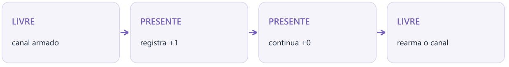
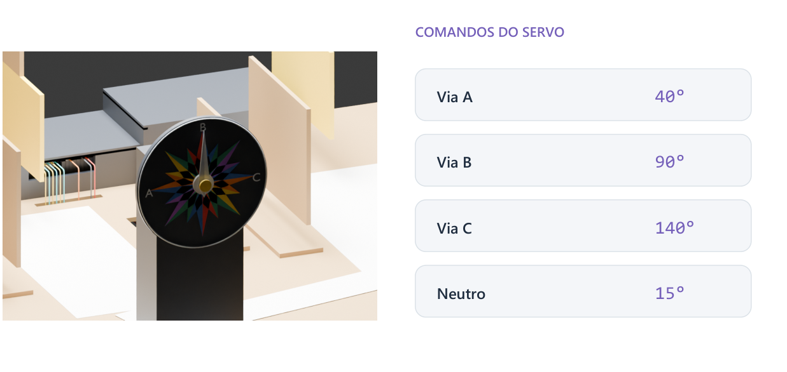
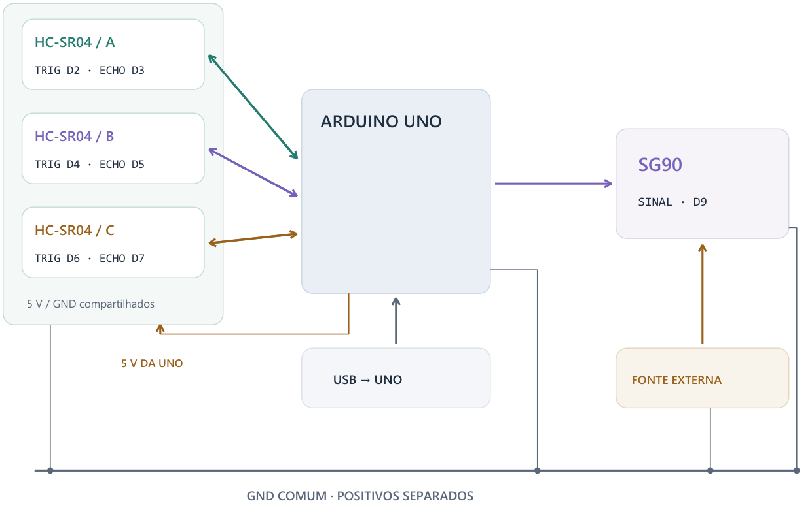

GRUPO 12 · PROJETOS I · CESAR SCHOOL · 2026.2
Bússola de
Fluxo UrbanoDa passagem ao ponteiro.
Entenda a proposta, percorra a lógica e examine o papel de cada peça da maquete funcional.
Experimentar o funcionamento →01 / EXPLAINER
Bússola de Fluxo Urbano
Da passagem ao ponteiro: uma explicação visual da maquete de bancada de 60 × 40 cm.

Resumo
A Bússola de Fluxo Urbano traduz uma comparação de passagens em uma indicação física. Na maquete, três sensores ultrassônicos acompanham rotas independentes; o Arduino registra eventos e, ao encerrar uma janela comum de 10 segundos, comanda o ponteiro do totem para a rota com maior contagem.
Este documento explica o percurso completo da informação: distância, presença, evento, comparação e movimento. A leitura pode ser acompanhada pela blueprint interativa e pelo modelo 3D, que permite girar a montagem, ocultar camadas e isolar seus componentes.
O que está sendo demonstrado
A bancada usa alvos planos de MDF para representar passagens controladas. O foco é tornar observável a relação entre uma entrada física e a resposta do mecanismo. Não há identificação de pessoas, reconhecimento de direção nem medição direta de ocupação.
As dimensões apresentadas pertencem ao modelo da bancada. A proposta urbana exige uma etapa própria de dimensionamento e avaliação. O resultado “maior fluxo” não deve ser apresentado como garantia de segurança [1-3].
02 / EXPLAINER
A lógica do conjunto
Do fenômeno observado à indicação: cada etapa tem uma entrada, uma transformação e uma saída.

Por que uma indicação física?
O propósito é tornar perceptível o movimento relativo entre caminhos por meio de um objeto situado no espaço. Sensores, processamento e resposta mecânica formam uma experiência figital: a leitura é digital, enquanto a informação aparece em um ponteiro visível.
O diferencial proposto está nessa tradução local e compreensível. O protótipo apresenta o princípio; não demonstra, por si só, superioridade sobre outras soluções, precisão em ruas reais ou impacto na segurança urbana.
Como ler os termos
Rota: um canal de leitura, identificado por A, B ou C. O sensor não reconhece o nome da via; a correspondência depende da sua posição e das ligações.
Evento: uma entrada confirmada após liberação. Um objeto que permanece diante do sensor continua sendo uma única entrada.
Janela: intervalo comum de comparação. Enquanto ela está aberta, o ponteiro conserva a indicação anterior. O resultado sempre descreve a última janela concluída.
03 / EXPLAINER
Uma bancada de 60 × 40 cm
Escala geométrica 1:1 da maquete: 1 mm do modelo corresponde a 1 mm proposto para a bancada.

Camadas com funções distintas
Estrutura: base de MDF de 3 mm, reforços e pés sustentam a montagem. Os pés de referência têm 25 mm de altura e criam espaço para os percursos inferiores dos cabos.
Leitura: os sensores ficam na lateral, com centro a 60 mm da base. Cada rota tem alvo e anteparo próprios. Nada nessa proposta depende de contato com o piso.
Acabamento e acesso
Apresentação: o totem mantém o disco vertical, a rosa dos ventos e o ponteiro frontal. Compartimentos removíveis cobrem a eletrônica e preservam acesso para manutenção.
A chapa de 600 × 400 mm define a base, não o consumo total de MDF. As demais peças precisam de um plano de corte. Medir o material e os componentes reais precede o fechamento dos encaixes [2-3].
04 / EXPLAINER
Da distância ao estado
Duas referências de distância e duas leituras estáveis reduzem oscilações na interpretação.

Limiares do perfil atual
| Distância válida | Interpretação candidata | Confirmação |
|---|---|---|
| Até 9 cm, inclusive | Presença | 2 leituras consecutivas |
| Entre 9 e 12 cm | Conserva o estado anterior | Interrompe a sequência candidata |
| 12 cm ou mais | Livre | 2 leituras consecutivas |
O que o filtro resolve
Os dois limiares criam uma faixa de estabilidade: a entrada e a saída não acontecem no mesmo ponto. Essa histerese evita que pequenas variações próximas de um único limite alternem o estado continuamente.
O programa intercala os disparos de A, B e C, com intervalo mínimo de 61 ms entre inícios. A consulta de cada rota ocorre nominalmente a cada 183 ms, sujeita ao tempo de execução e de comunicação serial [1].
O que depende da geometria
O anteparo oferece uma referência para o caminho livre; não é uma garantia de isolamento acústico. Uma reflexão da rota vizinha pode produzir uma distância plausível. Nem a histerese nem o escalonamento provam que esse eco veio da rota correta.
A exclusividade da leitura precisa ser ensaiada na posição real dos três sensores. Os limites de 9 e 12 cm são um perfil inicial da bancada, não uma calibração já comprovada.
05 / EXPLAINER
Da presença à passagem
Contar transições evita transformar um alvo parado em várias pessoas imaginárias.

Um evento começa na entrada
Quando a rota está livre e preparada, a presença estável soma uma unidade ao contador daquela rota. O objeto pode continuar diante do sensor; sua permanência não gera novos eventos.
Uma nova contagem exige uma saída estável seguida de outra entrada estável. O fechamento da janela zera os contadores, mas preserva esse estado: um alvo mantido no lugar não é contado novamente só porque passaram 10 segundos.
As rotas compartilham o relógio
Na partida física, o sistema espera as três rotas prontas e livres. A blueprint começa depois dessa preparação ideal. As três contagens pertencem ao mesmo intervalo, evitando comparar períodos diferentes.
No final do intervalo, o sistema guarda as contagens, escolhe uma indicação e inicia outra janela. Durante a leitura seguinte, o ponteiro mantém o resultado anterior [1].
Leitura comentada de uma janela
| Instante do exemplo | A | B | C | O que o ponteiro mostra |
|---|---|---|---|---|
| Início | 0 | 0 | 0 | Neutro na primeira janela |
| Durante as passagens | 1 | 2 | 1 | Ainda conserva a indicação anterior |
| Antes do fechamento | 1 | 3 | 2 | Ainda não aplica a nova decisão |
| Ao fechar 10 segundos | 1 | 3 | 2 | Indica B; nova janela começa em 0/0/0 |
06 / EXPLAINER
A decisão ganha movimento
A rosa dos ventos permanece fixa; o servo desloca somente o ponteiro leve à frente do mostrador.

Regra de escolha
Uma rota com contagem estritamente maior vence. Em caso de empate no maior valor, a indicação anterior só permanece se estiver entre as rotas empatadas. Se não houver uma anterior elegível, a saída é neutra.
Uma janela sem eventos também termina neutra. Qualquer leitura inválida torna a janela incompleta: o sistema não escolhe a maior das outras duas rotas como se a terceira tivesse contado zero.
Como o ponteiro se conecta
O SG90 fica atrás da face do totem, com eixo horizontal. O horn e o parafuso originais transferem o movimento ao ponteiro. O disco e a coluna não devem girar.
O ponteiro proposto tem raio útil de 37 mm, largura máxima de 8 mm e meta de massa inferior a 2 g. Engate completo, folga e ausência de atrito precisam ser conferidos no exemplar real. Não se pressupõe que o eixo atravesse sozinho uma chapa de MDF de 3 mm [2-3].
07 / EXPLAINER
Conexões que fazem sentido
Alimentação e sinal cumprem papéis distintos. O circuito é apresentado como topologia, não como posição final de cada fio.

Distribuição organizada
Cada HC-SR04 usa quatro condutores: VCC, GND, TRIG e ECHO. Os sinais seguem para D2/D3, D4/D5 e D6/D7. O servo usa três vias: alimentação, referência e sinal D9. O LED opcional em D10 está desativado no perfil atual.
A protoboard distribui energia e referência, com contatos e percursos identificáveis. A vista inferior do Atlas mostra os chicotes organizados; o componente real precisa ter seus barramentos conferidos [1-3].
Energia e registro
A proposta física prevê fonte regulada compatível para o servo. Unir os GNDs não significa unir o positivo externo ao positivo da UNO. Tensão, corrente disponível, polaridade e condutores precisam ser compatíveis com as peças reais.
O firmware emite registros de eventos e diagnósticos pelo Monitor Serial a 9600 baud. Não há cartão SD, armazenamento persistente ou conexão à internet nessa arquitetura. Reiniciar a placa reinicia as contagens [1].
08 / EXPLAINER
Peças, materiais e dimensões
Medidas de projeto em milímetros. Componentes eletrônicos e encaixes devem ser comparados aos exemplares disponíveis.
Catálogo resumido da montagem
| Conjunto / quantidade | Referência dimensional | Função na montagem |
|---|---|---|
| Base / 1 | 600 × 400 × 3 | MDF; sustenta e organiza a bancada |
| Totem / 1 | Corpo 60 × 35 × 135; total 165; disco Ø90 | Mostrador vertical e suporte do servo |
| Sensores / 3 | HC aproximado 45 × 20 × 15; leitura a 60 de altura | Medição lateral independente por rota |
| Alvos / 3 | Painel 100 × 60 × 3; pega 30 × 20 × 3 | MDF móvel; uma passagem controlada |
| Anteparos / 3 | Painel 100 × 80 × 3; fundo a 140 do sensor | Referência para caminho livre |
| UNO e protoboard | Placa 68,6 × 53,4; protoboard 165 × 55 × 10 | Processamento e distribuição elétrica |
| SG90 e ponteiro | SG90 23 × 12,2 × 29; raio útil do ponteiro 37 | Acionamento pelo horn original |
| Compartimentos / 3 | Plantas: UNO 92 × 65; protoboard 176 × 66; fonte 102 × 70. Paredes: 25 / 25 / 40 | Carenagens removíveis; tampas e paredes em MDF 3 mm |
O kit e os complementos
O inventário do projeto declara UNO, um HC-SR04, SG90, protoboard e jumpers. A arquitetura de três rotas exige dois sensores adicionais. Quantidade e comprimento de jumpers devem ser conferidos; o inventário não é substituído por suposições.
Além da eletrônica, entram MDF, cabos, terminações, fixações, acabamento e uma alimentação apropriada ao servo. A reserva de 3 m de cabo de quatro vias refere-se aos três chicotes dos sensores [3-4].
Orçamento de referência, datado
O levantamento de 18/10/2026 registrou R$ 60,18 no cenário mínimo condicionado e R$ 133,98 no recomendado. São subtotais históricos incompletos; não constituem cotação vigente.
Frete, corte, terminações, fios do servo, fixações, acabamento e chapas extras não estão fechados. Fonte e fixações emprestadas são condições do mínimo, não disponibilidades confirmadas. O MDF compartilhado deve ser contabilizado uma única vez [4].
09 / EXPLAINER
Experimente e acompanhe
Na pasta do projeto, abra ABRIR.html. Use a blueprint para a lógica e o Atlas para a montagem física.
Roteiro do exemplo A1 · B3 · C2
1. Na blueprint, selecione “Exemplo A1 · B3 · C2”. Observe as distâncias mudarem, os estados serem confirmados e as contagens crescerem.
2. Antes de 10 segundos, confira que o ponteiro conserva a indicação anterior. A existência de um líder provisório não antecipa a decisão.
3. No fechamento, confira A=1, B=3 e C=2. A saída passa para B, com comando de 90°. Os contadores da nova janela voltam a zero.
4. Clique em um bloco para ler sua função. Abra a peça correspondente no Atlas para examinar materiais, dimensões e conexões.
Roteiro manual de bancada
Comece com as três rotas livres, com o fundo de referência, e aguarde prontidão. Desloque o alvo diante de uma célula; depois libere a leitura. No roteiro inicial, mantenha presença e liberação por pelo menos 1 segundo cada.
No modelo mecânico, o alvo passa pela faixa de leitura, sobe 80 mm, retorna elevado e desce no início. Esse retorno deve ficar fora da região que produz eventos. Sua eficácia depende de ensaio real; não é garantida apenas pela animação.
Conte as passagens planejadas separadamente e confronte-as com os registros. Essa comparação permite identificar perdas, duplicações e captação de outra rota.
Casos para explorar na blueprint
| Experimento | Resultado esperado da lógica |
|---|---|
| Alvo permanece na frente | Uma entrada; sem novas contagens enquanto não houver liberação estável |
| Nova entrada após saída | Soma mais uma passagem à rota |
| Empate entre as maiores | Mantém anterior elegível; caso contrário, neutro |
| Janela sem passagens | Neutro a 15° |
| Uma leitura inválida | Janela incompleta; saída neutra ao fechar, sem comparação parcial |
Alcance da demonstração
A blueprint permite acompanhar a transformação das entradas ideais em contagens e decisão. A contagem física, os ecos entre rotas e o movimento real do servo dependem dos ensaios de bancada.
10 / EXPLAINER
O que a montagem precisa provar
A próxima etapa é transformar as hipóteses de geometria e operação em resultados observáveis de bancada.
Critérios para o ensaio físico
Exclusividade: movimentar o alvo de uma rota, mantendo as outras livres; verificar se apenas o canal correto registra. Repetir com rotas adjacentes e movimentos simultâneos.
Repetibilidade: comparar passagens planejadas e registradas em repetições documentadas, variando a velocidade do alvo e registrando perdas e duplicações.
Liberação: comprovar que a retirada e o retorno elevado rearmam a célula sem registrar uma passagem adicional.
Mecânica e energia: verificar engate do horn, atrito, curso do ponteiro, fixação, polaridade e estabilidade de alimentação. Corrigir o vão de 17 mm entre placa e pé dos anteparos antes de fabricar.
Limites que permanecem explícitos
Uma leitura válida em centímetros pode corresponder a um eco errado. Disparos alternados e anteparos ajudam a organizar o ensaio, mas não constituem prova de isolamento entre caminhos.
Pessoas lado a lado podem gerar um bloqueio único; um retorno pode gerar outro evento. A arquitetura não mede identidade, direção, ocupação nem quantidade exata de pessoas em uma rua.
Três leituras inválidas consecutivas sinalizam falha persistente. Recuperar exige leituras válidas e liberação estável; a janela já afetada permanece inválida até terminar [1].
Em 18/11, o grupo relatou funcionamento de um HC-SR04 de quatro pinos. No Tinkercad, os três canais compilaram e indicaram A, B e C. Integração física e aplicação urbana exigem ensaios próprios.
Referências e documentos de consulta
[1] Grupo 12. Firmware ultrassônico e pinagem da bancada: arduino-ide/BussolaFluxoUrbano/BussolaFluxoUrbano.ino e docs/montagem.md. Perfil atual 9/12 cm, janela 10 s. Acervo do projeto, edição consultada em 18/11/2026.
[2] Grupo 12. Catálogo dimensional do Atlas 3D: catalog.json. Modelos da base, totem, sensores, alvos, anteparos e eletrônica. Edição consultada em 18/11/2026.
[3] Grupo 12. Conexões conferidas e documentação da maquete: conexoes-conferidas.md; apresentação técnica do protótipo. Edição consultada em 18/11/2026.
[4] Grupo 12. Materiais e custos; inventário do kit. Revisão de 21/10/2026, com referências de preço de 18/10/2026. Valores condicionais, sujeitos a atualização.
[5] Cho, A. et al. Transformer Explainer: Learning LLM Transformers with Interactive Visual Explanation and Experimentation. 2026. Referência de organização visual e editorial fornecida ao projeto. Demonstração: poloclub.github.io/transformer-explainer/.